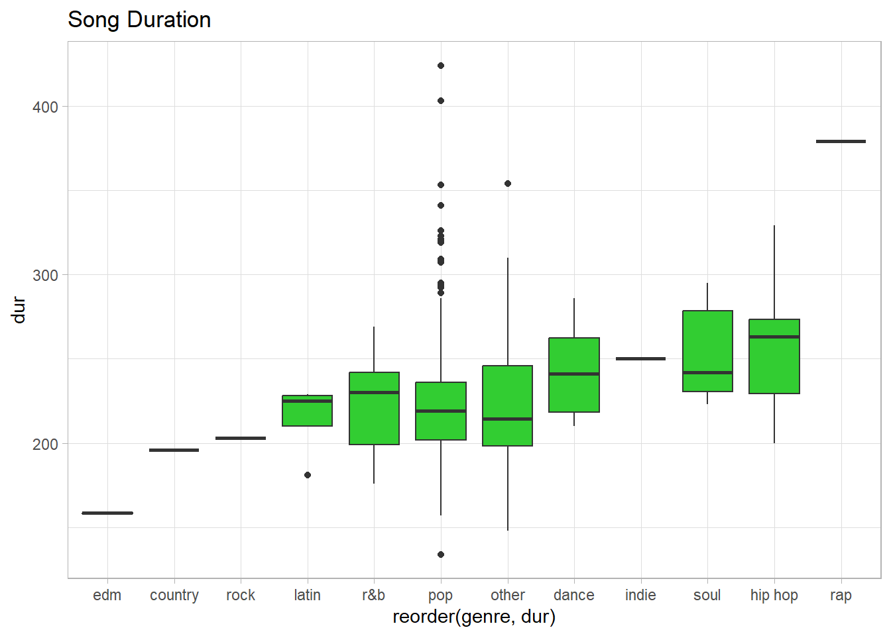
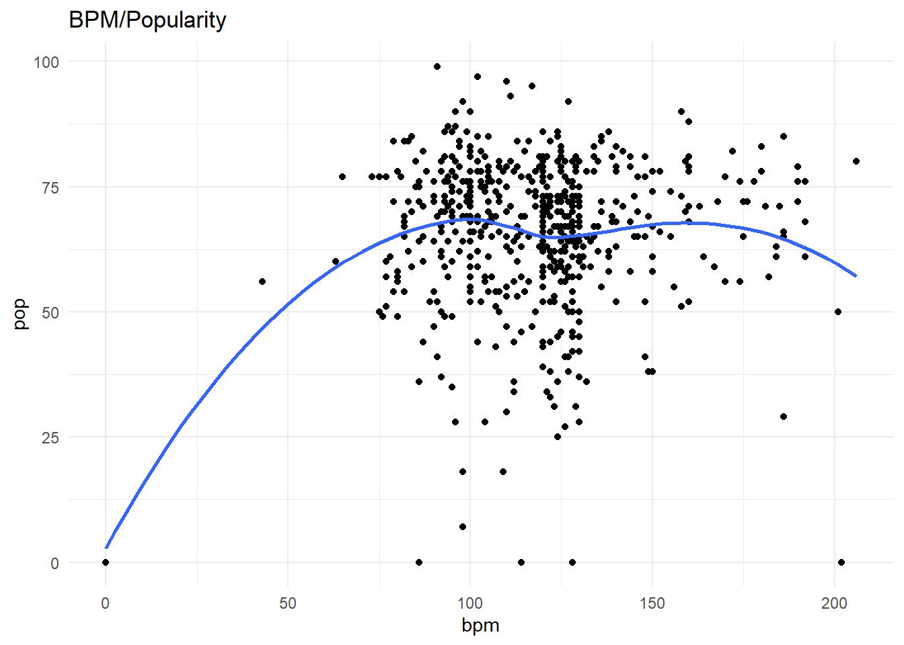

Code
library(readxl)
library(tidyverse)
library(lubridate)
library(ggplot2)
library(stringr)
library(readr)
library(cluster)
library(dplyr)
library(AER)
knitr::opts_chunk$set(echo = TRUE)library(readxl)
library(tidyverse)
library(lubridate)
library(ggplot2)
library(stringr)
library(readr)
library(cluster)
library(dplyr)
library(AER)
knitr::opts_chunk$set(echo = TRUE)top10s <- read_csv("C:/Users/Bryn Kruzlic/OneDrive/Desktop/MS_DACSS/DACSS603/top10s.csv")New names:
Rows: 603 Columns: 15
── Column specification
──────────────────────────────────────────────────────── Delimiter: "," chr
(3): title, artist, top genre dbl (12): ...1, year, bpm, nrgy, dnce, dB, live,
val, dur, acous, spch, pop
ℹ Use `spec()` to retrieve the full column specification for this data. ℹ
Specify the column types or set `show_col_types = FALSE` to quiet this message.
• `` -> `...1`View(top10s)top10s %>%
select_all() %>%
filter(bpm == 0 |
nrgy == 0 |
dnce == 0 |
dB == 0 |
live == 0 |
dur == 0 |
spch == 0 |
pop == 0 )# A tibble: 5 × 15
...1 title artist `top genre` year bpm nrgy dnce dB live val dur
<dbl> <chr> <chr> <chr> <dbl> <dbl> <dbl> <dbl> <dbl> <dbl> <dbl> <dbl>
1 51 Hello Marti… big room 2010 128 98 67 -3 10 45 191
2 139 Blow… P!nk dance pop 2012 114 92 60 -3 25 75 256
3 268 Not … Justi… dance pop 2014 86 73 59 -6 38 46 266
4 363 L.A.… Fergie dance pop 2015 202 39 48 -8 26 27 193
5 443 Mill… Adele british so… 2016 0 0 0 -60 0 0 227
# ℹ 3 more variables: acous <dbl>, spch <dbl>, pop <dbl>summary(top10s) ...1 title artist top genre
Min. : 1.0 Length:603 Length:603 Length:603
1st Qu.:151.5 Class :character Class :character Class :character
Median :302.0 Mode :character Mode :character Mode :character
Mean :302.0
3rd Qu.:452.5
Max. :603.0
year bpm nrgy dnce
Min. :2010 Min. : 0.0 Min. : 0.0 Min. : 0.00
1st Qu.:2013 1st Qu.:100.0 1st Qu.:61.0 1st Qu.:57.00
Median :2015 Median :120.0 Median :74.0 Median :66.00
Mean :2015 Mean :118.5 Mean :70.5 Mean :64.38
3rd Qu.:2017 3rd Qu.:129.0 3rd Qu.:82.0 3rd Qu.:73.00
Max. :2019 Max. :206.0 Max. :98.0 Max. :97.00
dB live val dur
Min. :-60.000 Min. : 0.00 Min. : 0.00 Min. :134.0
1st Qu.: -6.000 1st Qu.: 9.00 1st Qu.:35.00 1st Qu.:202.0
Median : -5.000 Median :12.00 Median :52.00 Median :221.0
Mean : -5.579 Mean :17.77 Mean :52.23 Mean :224.7
3rd Qu.: -4.000 3rd Qu.:24.00 3rd Qu.:69.00 3rd Qu.:239.5
Max. : -2.000 Max. :74.00 Max. :98.00 Max. :424.0
acous spch pop
Min. : 0.00 Min. : 0.000 Min. : 0.00
1st Qu.: 2.00 1st Qu.: 4.000 1st Qu.:60.00
Median : 6.00 Median : 5.000 Median :69.00
Mean :14.33 Mean : 8.358 Mean :66.52
3rd Qu.:17.00 3rd Qu.: 9.000 3rd Qu.:76.00
Max. :99.00 Max. :48.000 Max. :99.00 top10s <- top10s %>%
filter(title != 'The Hills' | year != 2016)#Fixing and grouping
genre <- top10s["top genre"]
unique(top10s$'top genre') [1] "neo mellow" "detroit hip hop"
[3] "dance pop" "pop"
[5] "canadian pop" "hip pop"
[7] "barbadian pop" "atl hip hop"
[9] "australian pop" "indie pop"
[11] "art pop" "colombian pop"
[13] "big room" "british soul"
[15] "chicago rap" "acoustic pop"
[17] "permanent wave" "boy band"
[19] "baroque pop" "celtic rock"
[21] "electro" "complextro"
[23] "canadian hip hop" "candy pop"
[25] "alaska indie" "folk-pop"
[27] "metropopolis" "house"
[29] "australian hip hop" "electropop"
[31] "australian dance" "hollywood"
[33] "canadian contemporary r&b" "irish singer-songwriter"
[35] "tropical house" "belgian edm"
[37] "french indie pop" "hip hop"
[39] "danish pop" "latin"
[41] "canadian latin" "electronic trap"
[43] "edm" "electro house"
[45] "downtempo" "brostep"
[47] "contemporary country" "moroccan pop"
[49] "escape room" "alternative r&b" top10s <-top10s%>%separate((`top genre`),c("variable","genre"),extra='merge')Warning: Expected 2 pieces. Missing pieces filled with `NA` in 97 rows [5, 12, 24, 55,
58, 60, 65, 106, 108, 110, 114, 118, 119, 138, 148, 150, 153, 155, 163, 168,
...].other <- c("complextro", "downtempo", "brostep", "electro", "electronic", "escape", "folk-pop", "hollywood", "house", "irish", "permanent", "neo", "metropolis", "tropical")
top10s$genre[top10s$variable %in% other] <- 'other'
top10s$genre[top10s$variable == 'hip'] <- 'hip hop'
top10s$genre[top10s$variable == 'latin'] <- 'latin'
top10s$genre[top10s$variable == 'boy'] <- 'pop'
top10s$genre[top10s$variable == 'french'] <- 'pop'
top10s$genre[top10s$variable == 'electropop'] <- 'pop'
top10s$genre[top10s$variable == 'pop'] <- 'pop'
top10s$genre[top10s$genre == 'contemporary r&b'] <- 'r&b'
top10s$genre[top10s$genre == 'room'] <- 'other'
table(top10s$genre)
country dance edm hip hop indie latin other pop r&b rap
1 6 2 20 1 5 46 493 9 1
rock soul
1 11 miss <- colSums(is.na(top10s))
print(miss[miss>0])genre
6 top10s <-na.omit(top10s)pop_artist <- top10s%>%arrange(desc(pop))%>%group_by(artist)
pop_artist# A tibble: 596 × 16
# Groups: artist [181]
...1 title artist variable genre year bpm nrgy dnce dB live val
<dbl> <chr> <chr> <chr> <chr> <dbl> <dbl> <dbl> <dbl> <dbl> <dbl> <dbl>
1 573 "Memor… Maroo… pop pop 2019 91 32 76 -7 8 57
2 574 "Lose … Selen… dance pop 2019 102 34 51 -9 21 9
3 575 "Someo… Lewis… pop pop 2019 110 41 50 -6 11 45
4 576 "Se\xf… Shawn… canadian pop 2019 117 54 76 -6 9 75
5 577 "How D… Sam S… pop pop 2019 111 68 48 -5 8 35
6 578 "South… Ed Sh… pop pop 2019 98 62 86 -6 9 67
7 579 "Tramp… SHAED electro… pop 2019 127 46 62 -6 14 50
8 580 "Happi… Marsh… brostep other 2019 100 79 69 -3 17 67
9 581 "Truth… Lizzo escape other 2019 158 62 72 -3 12 41
10 582 "Good … Lizzo escape other 2019 96 89 67 -3 74 48
# ℹ 586 more rows
# ℹ 4 more variables: dur <dbl>, acous <dbl>, spch <dbl>, pop <dbl>top_artist<-top10s%>%
group_by(`year`)%>%
count(artist)%>%
mutate(prop=n/sum(n))
most_popular_artist <- pop_artist%>%count(artist)%>%arrange(desc(n))
most_popular_artist%>%head(15)%>%ggplot(aes(x=reorder(artist,n),y=n))+geom_col(fill="skyblue")+ggtitle("15 Most Popular Artist")+coord_flip()duration <-top10s%>%ggplot(aes(x=reorder(genre,dur),y=dur))+geom_boxplot(fill="limegreen")+ggtitle("Song Duration")+theme_light()
duration
duration <- top10s %>%
ggplot(aes(x = reorder(genre, dur), y = dur)) +
geom_point() +
ggtitle("Song Duration") +
xlab("Genre") +
ylab("Duration") +
theme_light() +
theme(axis.text.x = element_text(angle = 45, hjust = 1, vjust = 1.2))
durationbpm <- top10s%>%ggplot(aes(x=reorder(genre,bpm),y=bpm))+geom_boxplot(fill="violet")+ggtitle("bpm Distribution")+theme_light()+theme(axis.text.x = element_text(angle = 45, hjust = 1, vjust = 1.2))
bpmsummarized_data_genre <- top10s %>%
group_by(genre) %>%
summarize(avg_duration = mean(dur)) %>%
arrange(desc(avg_duration))
View(summarized_data_genre)max_pop <-top10s%>%filter(pop>=60)%>%select(artist,pop,title,genre)%>%arrange(desc(pop))
max_pop# A tibble: 448 × 4
artist pop title genre
<chr> <dbl> <chr> <chr>
1 Maroon 5 99 "Memories" pop
2 Selena Gomez 97 "Lose You To Love Me" pop
3 Lewis Capaldi 96 "Someone You Loved" pop
4 Shawn Mendes 95 "Se\xf1orita" pop
5 Sam Smith 93 "How Do You Sleep?" pop
6 Ed Sheeran 92 "South of the Border (feat. Camila Cabello & Cardi… pop
7 SHAED 92 "Trampoline (with ZAYN)" pop
8 Marshmello 90 "Happier" other
9 Lizzo 90 "Truth Hurts" other
10 Lizzo 90 "Good as Hell (feat. Ariana Grande) - Remix" other
# ℹ 438 more rowsmin_pop <-top10s%>%filter(pop<=59)%>%select(artist,pop,title,genre)%>%arrange(desc(pop))
min_pop# A tibble: 148 × 4
artist pop title genre
<chr> <dbl> <chr> <chr>
1 Adam Lambert 59 If I Had You pop
2 The Black Eyed Peas 59 Rock That Body pop
3 Britney Spears 59 Hold It Against Me pop
4 Jennifer Lopez 59 I'm Into You pop
5 Pitbull 59 Don't Stop the Party (feat. TJR) pop
6 Alicia Keys 59 Girl On Fire (feat. Nicki Minaj) - Inferno V… hip …
7 Pharrell Williams 59 Come Get It Bae pop
8 Lost Frequencies 59 Reality (feat. Janieck Devy) - Radio Edit edm
9 Fifth Harmony 59 Angel pop
10 Little Mix 59 Touch (feat. Kid Ink) pop
# ℹ 138 more rowssummarized_songs_artist_1 <- top10s %>%
group_by(artist) %>%
summarize(no.of.songs = n()) %>%
arrange(desc(no.of.songs))
summarized_songs_artist <- summarized_songs_artist_1 %>%
slice_max(no.of.songs,n=10)
view(summarized_songs_artist)var1_pdf <- prop.table(table(top10s$genre))
var1_cdf <- cumsum(var1_pdf)
var1_pdf_cdf <- data.frame(Genre = names(var1_pdf), Probability = var1_pdf, Cumulative = var1_cdf)
print(var1_pdf_cdf) Genre Probability.Var1 Probability.Freq Cumulative
country country country 0.001677852 0.001677852
dance dance dance 0.010067114 0.011744966
edm edm edm 0.003355705 0.015100671
hip hop hip hop hip hop 0.033557047 0.048657718
indie indie indie 0.001677852 0.050335570
latin latin latin 0.008389262 0.058724832
other other other 0.077181208 0.135906040
pop pop pop 0.827181208 0.963087248
r&b r&b r&b 0.015100671 0.978187919
rap rap rap 0.001677852 0.979865772
rock rock rock 0.001677852 0.981543624
soul soul soul 0.018456376 1.000000000var2_pdf <- density(top10s$dur)
var2_pdf <- prop.table(table(top10s$dur))
var2_cdf <- cumsum(top10s$dur)
var2_pdf <- prop.table(table(top10s$dur))
var2_cdf <- cumsum(var2_pdf)
var2_pdf_cdf <- data.frame(Duration = unique(top10s$dur),
Probability = var2_pdf,
Cumulative = var2_cdf)
print(var2_pdf_cdf) Duration Probability.Var1 Probability.Freq Cumulative
134 217 134 0.001677852 0.001677852
148 263 148 0.001677852 0.003355705
157 200 157 0.001677852 0.005033557
158 295 158 0.001677852 0.006711409
159 221 159 0.003355705 0.010067114
160 214 160 0.001677852 0.011744966
162 203 162 0.001677852 0.013422819
164 225 164 0.001677852 0.015100671
166 216 166 0.001677852 0.016778523
169 235 169 0.003355705 0.020134228
170 230 170 0.001677852 0.021812081
171 213 171 0.003355705 0.025167785
172 269 172 0.001677852 0.026845638
173 202 173 0.003355705 0.030201342
175 308 175 0.001677852 0.031879195
176 274 176 0.003355705 0.035234899
177 187 177 0.001677852 0.036912752
178 284 178 0.003355705 0.040268456
179 227 179 0.001677852 0.041946309
180 215 180 0.001677852 0.043624161
181 238 181 0.008389262 0.052013423
182 212 182 0.006711409 0.058724832
183 231 183 0.005033557 0.063758389
184 228 184 0.010067114 0.073825503
185 192 185 0.005033557 0.078859060
186 172 186 0.008389262 0.087248322
187 258 187 0.003355705 0.090604027
188 249 188 0.006711409 0.097315436
189 196 189 0.011744966 0.109060403
190 264 190 0.005033557 0.114093960
191 253 191 0.010067114 0.124161074
192 185 192 0.013422819 0.137583893
193 273 193 0.021812081 0.159395973
194 251 194 0.005033557 0.164429530
195 193 195 0.001677852 0.166107383
196 257 196 0.008389262 0.174496644
197 186 197 0.006711409 0.181208054
198 220 198 0.013422819 0.194630872
199 329 199 0.013422819 0.208053691
200 191 200 0.018456376 0.226510067
201 285 201 0.010067114 0.236577181
202 252 202 0.020134228 0.256711409
203 236 203 0.016778523 0.273489933
204 201 204 0.011744966 0.285234899
205 267 205 0.008389262 0.293624161
206 223 206 0.015100671 0.308724832
207 260 207 0.011744966 0.320469799
208 379 208 0.015100671 0.335570470
209 254 209 0.008389262 0.343959732
210 262 210 0.011744966 0.355704698
211 205 211 0.016778523 0.372483221
212 219 212 0.008389262 0.380872483
213 242 213 0.021812081 0.402684564
214 208 214 0.010067114 0.412751678
215 199 215 0.018456376 0.431208054
216 321 216 0.013422819 0.444630872
217 210 217 0.015100671 0.459731544
218 307 218 0.011744966 0.471476510
219 232 219 0.013422819 0.484899329
220 197 220 0.015100671 0.500000000
221 265 221 0.018456376 0.518456376
222 229 222 0.010067114 0.528523490
223 247 223 0.011744966 0.540268456
224 255 224 0.013422819 0.553691275
225 279 225 0.020134228 0.573825503
226 245 226 0.006711409 0.580536913
227 233 227 0.020134228 0.600671141
228 188 228 0.018456376 0.619127517
229 222 229 0.013422819 0.632550336
230 248 230 0.023489933 0.656040268
231 211 231 0.013422819 0.669463087
232 206 232 0.010067114 0.679530201
233 198 233 0.010067114 0.689597315
234 277 234 0.010067114 0.699664430
235 171 235 0.015100671 0.714765101
236 243 236 0.016778523 0.731543624
237 237 237 0.003355705 0.734899329
238 256 238 0.008389262 0.743288591
239 224 239 0.005033557 0.748322148
240 209 240 0.005033557 0.753355705
241 271 241 0.003355705 0.756711409
242 184 242 0.008389262 0.765100671
243 177 243 0.008389262 0.773489933
244 183 244 0.005033557 0.778523490
245 354 245 0.011744966 0.790268456
246 272 246 0.003355705 0.793624161
247 326 247 0.003355705 0.796979866
248 280 248 0.008389262 0.805369128
249 157 249 0.005033557 0.810402685
250 241 250 0.005033557 0.815436242
251 207 251 0.010067114 0.825503356
252 424 252 0.006711409 0.832214765
253 244 253 0.008389262 0.840604027
254 353 254 0.001677852 0.842281879
255 286 255 0.005033557 0.847315436
256 259 256 0.003355705 0.850671141
257 250 257 0.006711409 0.857382550
258 270 258 0.005033557 0.862416107
259 173 259 0.001677852 0.864093960
260 190 260 0.006711409 0.870805369
261 179 261 0.003355705 0.874161074
262 194 262 0.003355705 0.877516779
263 240 263 0.008389262 0.885906040
264 246 264 0.008389262 0.894295302
265 178 265 0.001677852 0.895973154
266 204 266 0.001677852 0.897651007
267 319 267 0.001677852 0.899328859
268 226 268 0.001677852 0.901006711
269 268 269 0.006711409 0.907718121
270 323 270 0.003355705 0.911073826
271 169 271 0.003355705 0.914429530
272 160 272 0.006711409 0.921140940
273 239 273 0.005033557 0.926174497
274 266 274 0.005033557 0.931208054
277 282 277 0.003355705 0.934563758
279 234 279 0.006711409 0.941275168
280 218 280 0.001677852 0.942953020
282 293 282 0.003355705 0.946308725
284 189 284 0.001677852 0.947986577
285 134 285 0.006711409 0.954697987
286 320 286 0.003355705 0.958053691
289 159 289 0.001677852 0.959731544
291 292 291 0.001677852 0.961409396
292 309 292 0.001677852 0.963087248
293 182 293 0.001677852 0.964765101
294 181 294 0.001677852 0.966442953
295 166 295 0.003355705 0.969798658
304 170 304 0.001677852 0.971476510
307 291 307 0.001677852 0.973154362
308 403 308 0.001677852 0.974832215
309 310 309 0.001677852 0.976510067
310 289 310 0.001677852 0.978187919
319 176 319 0.001677852 0.979865772
320 261 320 0.001677852 0.981543624
321 158 321 0.001677852 0.983221477
323 180 323 0.001677852 0.984899329
326 175 326 0.001677852 0.986577181
329 341 329 0.003355705 0.989932886
341 164 341 0.001677852 0.991610738
353 195 353 0.001677852 0.993288591
354 304 354 0.001677852 0.994966443
379 294 379 0.001677852 0.996644295
403 148 403 0.001677852 0.998322148
424 162 424 0.001677852 1.000000000variable_2 <- top10s %>%
group_by(genre) %>%
summarize(avg_duration = mean(dur)) %>%
arrange(desc(avg_duration))
View(variable_2)
colnames(variable_2) <- c("Song Genre", "Average Song Duration")
view(variable_2)
mean(top10s$dur)[1] 224.745sd(top10s$dur)[1] 34.26896standard_errors <- aggregate(dur ~ genre, data = top10s, FUN = function(x) sd(x) / sqrt(length(x)))
sufficient_observations <- aggregate(dur ~ genre, data = top10s, FUN = function(x) length(x) >= 2)
genre_proportions <- prop.table(table(top10s$genre))
genre_sample_sizes <- as.integer(table(top10s$genre))confidence_intervals <- lapply(names(genre_proportions), function(g) {
x <- as.integer(genre_proportions[g] * genre_sample_sizes[g])
n <- genre_sample_sizes[g]
conf_int <- binom.test(x, n)$conf.int
data.frame(genre = g, conf_int)
})Error in binom.test(x, n): 'x' must be nonnegative and integerconfidence_intervals <- do.call(rbind, confidence_intervals)Error in do.call(rbind, confidence_intervals): object 'confidence_intervals' not foundprint(confidence_intervals)Error in print(confidence_intervals): object 'confidence_intervals' not foundaverage_duration <- aggregate(dur ~ genre, data = top10s, FUN = mean)
barplot(average_duration$dur, names.arg = average_duration$genre, xlab = "Genre", ylab = "Duration", main = "Average Duration by Genre", col = "steelblue")top10s$dur <- as.numeric(top10s$dur)
missing_values <- is.na(top10s$dur)
subset_data <- top10s[!missing_values, ]
barplot(table(top10s$genre, useNA = "ifany"), beside = TRUE, col = "lightgray", xlab = "Genre", ylab = "Count", main = "Top 10s - Genre Distribution")
boxplot(dur ~ genre, data = top10s, col = "maroon", xlab = "Genre", ylab = "Duration", abline(h = median(top10s$dur), col = "blue", lwd = 2, lty = 2), main = "Top 10s - Duration by Genre")
model <- lm(dur ~ genre, data = top10s)
summary(model)
Call:
lm(formula = dur ~ genre, data = top10s)
Residuals:
Min 1Q Median 3Q Max
-88.789 -21.789 -3.789 14.053 201.211
Coefficients:
Estimate Std. Error t value Pr(>|t|)
(Intercept) 196.00 32.75 5.985 3.78e-09 ***
genredance 47.00 35.37 1.329 0.1845
genreedm -37.50 40.11 -0.935 0.3502
genrehip hop 62.70 33.56 1.868 0.0622 .
genreindie 54.00 46.31 1.166 0.2441
genrelatin 18.60 35.87 0.518 0.6043
genreother 27.04 33.10 0.817 0.4143
genrepop 26.79 32.78 0.817 0.4141
genrer&b 25.67 34.52 0.744 0.4575
genrerap 183.00 46.31 3.951 8.72e-05 ***
genrerock 7.00 46.31 0.151 0.8799
genresoul 59.27 34.20 1.733 0.0836 .
---
Signif. codes: 0 '***' 0.001 '**' 0.01 '*' 0.05 '.' 0.1 ' ' 1
Residual standard error: 32.75 on 584 degrees of freedom
Multiple R-squared: 0.1037, Adjusted R-squared: 0.08678
F-statistic: 6.14 on 11 and 584 DF, p-value: 1.396e-09plot(top10s$genre, top10s$dur)Warning in xy.coords(x, y, xlabel, ylabel, log): NAs introduced by coercionWarning in min(x): no non-missing arguments to min; returning InfWarning in max(x): no non-missing arguments to max; returning -InfError in plot.window(...): need finite 'xlim' values
nrgy_dnce <-top10s%>%ggplot(aes(x=nrgy,y=dnce))+geom_point()+ggtitle("Energy/Danceability")+theme_light()+geom_smooth(se=FALSE)
nrgy_dnce`geom_smooth()` using method = 'loess' and formula = 'y ~ x'cor(top10s$nrgy, top10s$dnce)[1] 0.1666149val_nrgy <-top10s%>%ggplot(aes(x=val,y=nrgy))+geom_point()+ggtitle("Positivity/Energy")+theme_light()+geom_smooth(se=FALSE)
val_nrgy`geom_smooth()` using method = 'loess' and formula = 'y ~ x'cor(top10s$val, top10s$nrgy)[1] 0.4109696bpm_dnce <-top10s%>%ggplot(aes(x=bpm,y=dnce))+geom_point()+ggtitle("BPM/Danceability")+theme_light()+geom_smooth(se=FALSE)
bpm_dnce`geom_smooth()` using method = 'loess' and formula = 'y ~ x'cor(top10s$bpm, top10s$dnce)[1] -0.1322216bpm_pop <- top10s%>%ggplot(aes(x=bpm,y=pop))+geom_point()+ggtitle("BPM/Popularity")+theme_minimal()+geom_smooth(se=FALSE)
bpm_pop`geom_smooth()` using method = 'loess' and formula = 'y ~ x'
cor(top10s$bpm, top10s$pop)[1] 0.02314881